This tutorial will show how to connect to a remote server such as Alta using VS Code, setup the development container environment, and use what it has to offer!
If you run into any issues during this tutorial, please ask for help in the PSTAT Research Computing Users Google Group!
Prereqs
- VS Code text editor
- Remote Development Pack Extension
- Install in VS Code by searching the extension shop using
ctrl/⌘ +shift+xshortcut. - PSTAT User Account
To run your code remotely you will first need to connect to a remote server such as Alta. For more information about available computing servers, checkout this wiki entry.
With our VS Code extensions, remote connections are made simple:
- Click on the bottom right button to "Open a Remote Window". This will launch the VS Code command palette for remote connections:

- Select "Connect Current Window to Host..." option.

- From here select the host you wish to connect to. If the remote host that you want to connect to does not appear in the options, use the "Add New SSH Host..." option. Type the following command where you replace
<NetID>with your own NetID:
ssh <NetID>@alta.pstat.ucsb.edu
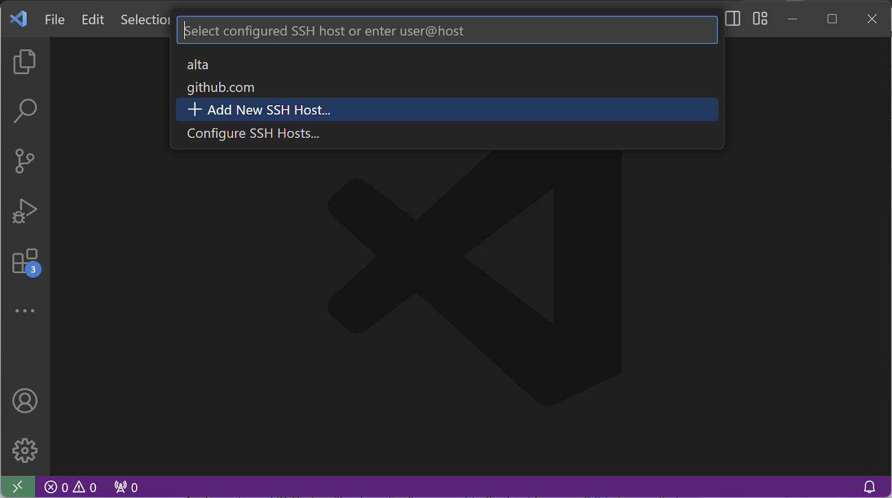
- You will be prompted to save the configuration. Make sure to select either
C:\Users\<your_username>\.ssh\config(Windows) or~/.ssh/config(MacOS/Linux). - From here, VS Code will automatically connect to the host for you. If this is your first time connecting to any remote server, it may take a few seconds for VS Code to install configurations in the background. You may also be prompted about the type of operating system your server uses - select "Linux". Once the setup is complete you will be greeted with a similar window:
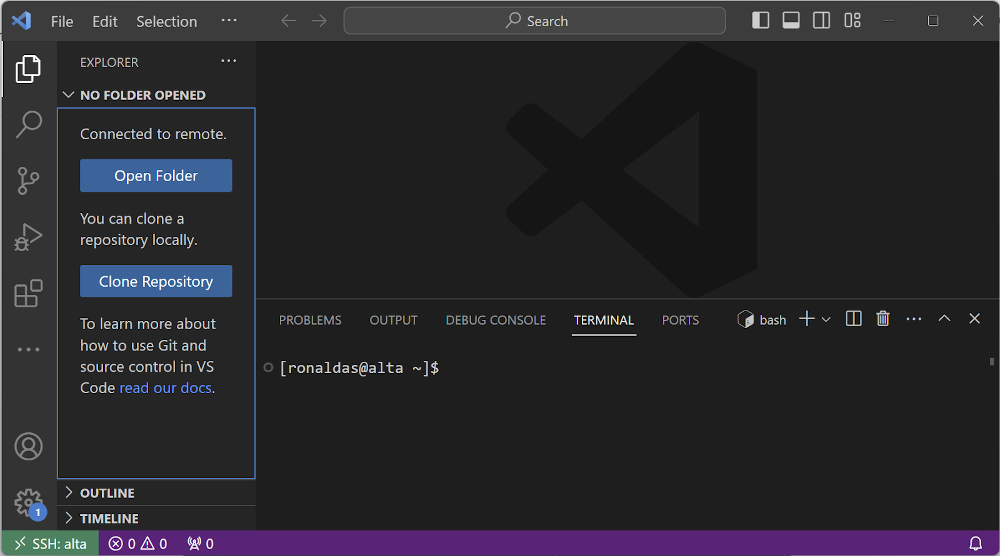
Now that you are connected to a server, we can set up the development container!
- In your terminal, run the following code where you should replace
<project-name>with the name of your project/directory you wish to create:
copier copy gh:UCSB-PSTAT/devcontainer-template <project-name>
- Answer the questions by selecting from the options provided. An example can be seen below:
🎤 What is the name of your project? (Must be unique and use lowercase, dashes -, underscores _ ONLY)
my-awesome-project
🎤 What language(s) will you use in this project?
R
🎤 Do you want to install Visual Studio Code extensions for Jupyter notebooks using R?
Yes
🎤 Install RStudio Server? This is optional if using VS Code and R extensions for development.
Yes
🎤 Install Quarto? Quarto is optional publishing system compatible with R.
Yes
🎤 Do you want to include example files?
Yes
Copying from template version 1.1.0
create .
create .devcontainer
create .devcontainer/Dockerfile
create .devcontainer/devcontainer.json
create README.md
create example.Rmd
create .copier-answers.yml
- Run the command below to view your new project folder (again, replace
<project-name>with the name of your project/directory you created):
tree -a <project-name>
<project-name> ├── .copier-answers.yml ├── .devcontainer │ ├── devcontainer.json │ └── Dockerfile ├── example.Rmd ├── example-R.qmd └── README.md
- You now have a new directory in which you can open up a development container! To do so, click on "Open Folder" in the left menu and navigate to your project folder's name:

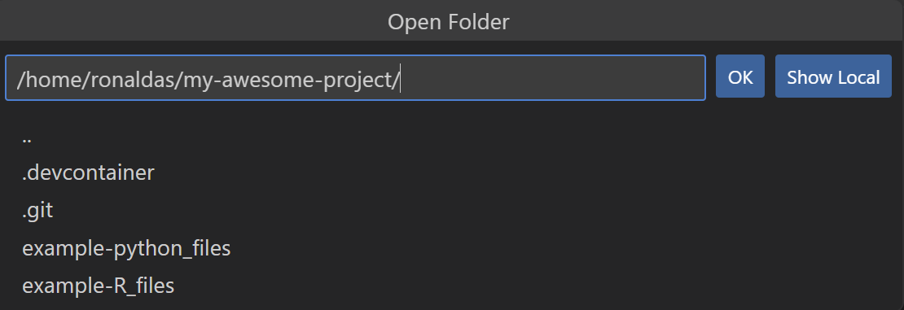
- Click OK. This will open up your project's folder (in the example, it will open "my-research-project".

- From here, you can click to "Reopen in Container" or click on the bottom left green button and select "Reopen in Container":

- Your container will be built. You can click on the bottom right hand dialogue to view the build process log file.

- To leave the container you can click on the bottom left green button and click on the option "Reopen folder in SSH".
Although you can edit files directly in VS Code, it may be more preferable to utilize more specialized tools such as RStudio to edit files such as Qmd/Rmd. This requires us to access Jupyterhub.
- Open up a new terminal window either by pressing the "+" in the tool pane or by using ctrl/cmd + ` on your keyboard:
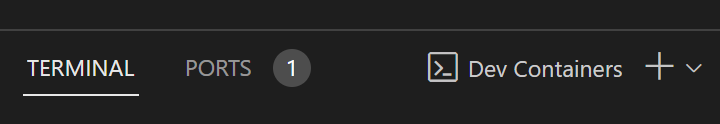
- You will see the following terminal pop-up. Inside of it, there will be a "Jupyter server token". Copy it for the following step.
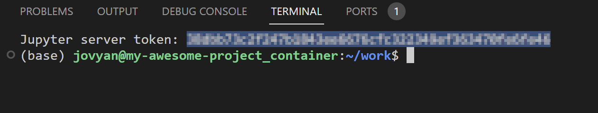
- Head into "Ports". Look for port 8888 (which will be labeled as "Jupyterlab"). Mouse over the "Forwarded Address" box and click on "Open in Browser":

- You will be taken to the following login page. Here you can input your copied Jupyter token or scroll down and set a password. Either way, every time you open the terminal you will always have access to the Jupyter token.

- Upon logging in you will have access to Jupyterlab! From here, you can edit your files/notebooks using its interface or RStudio.
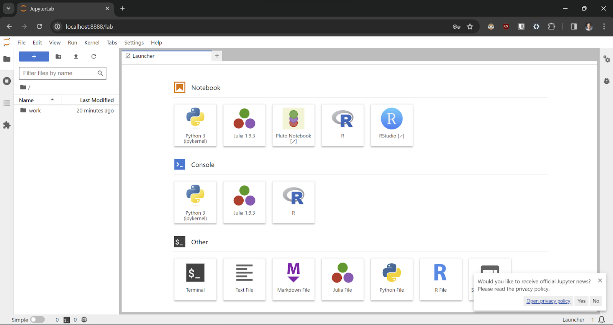
- To open RStudio, simply select the RStudio button in the launcher.
Python
Inside Container (immediate)
This method will install packages immediately in your container but will
not
get added to your container configuration files for reproducibility by others.
To install packages using the Anaconda distribution use the mamba command. This follows the same syntax as conda but runs a lot faster. To install packages using PyPI, it is sufficient to use pip.
$> mamba install numpy=1.26 ... $> pip install scikit-ntk==1.1.3
Inside Dockerfile (reproducible)
This method will build your container with these packages pre-installed. If you share your configuration files with someone else, they will be able to reproduce your installation with no additional steps.
You will need to rebuild your container to install packages this way!
To install Python packages in a reproducible way, you will need to add them to your Dockerfile. Simply add the package name underneath the comment for Anaconda/Pip packages followed by a ‘\'.
For example, here I am adding a Anaconda distribution package scikit-learn (using conda/mamba commands):
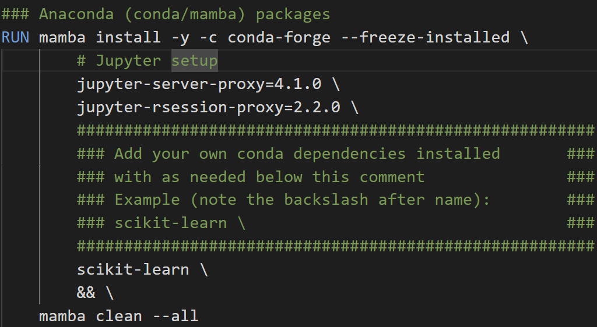
And here, I am adding a PyPI package scikit-ntk (using pip command):
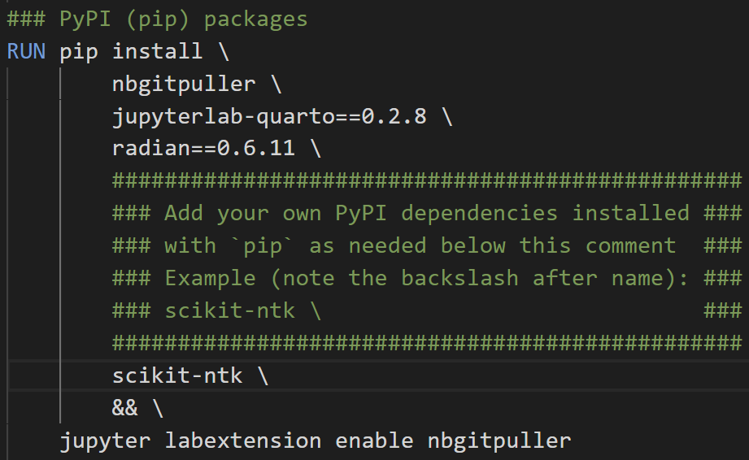
R
Inside Container (immediate)
This method will install packages immediately in your container but will
not
get added to your container configuration files for reproducibility by others.
For R, any of your favorite commands for package installation should function out of the box (install.packages(...) being the most common). This can be run in 3 ways:
- Inside VS Code terminal without launching R:
$> R -e ‘install.packages("ggplot2")'
- Inside an attached R terminal either by typing "R" in VS Code terminal or attaching via interface:
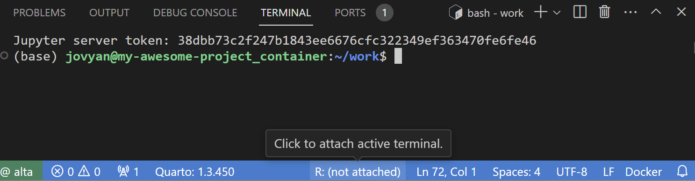
- Inside RStudio server
Inside Dockerfile (reproducible)
This method will build your container with these packages pre-installed. If you share your configuration files with someone else, they will be able to reproduce your installation with no additional steps.
You will need to rebuild your container to install packages this way!
To install R packages in a reproducible way, you will need to add them to your Dockerfile. You will need to add packages using this type of command underneath the comment for R packages followed by a ‘&& \':
R -e ‘install.packages("ggplot2")' && \
For example, here I am adding the dplyr package:
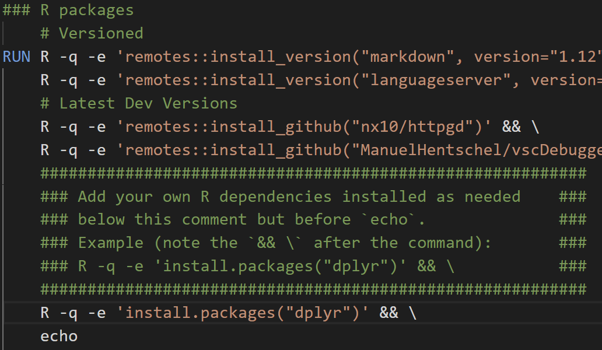
System Packages
If your language specific packages have additional system related requirements, the easiest way to install them is to directly add them to the Dockerfile found in the .devcontainer directory of your project as shown below:
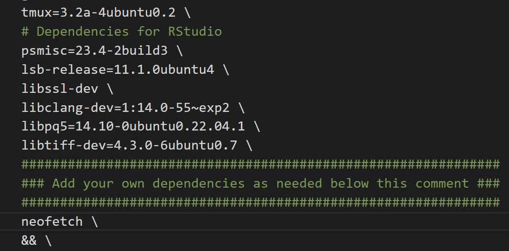
Here I am installing an additional package called "neofetch". Make sure that each package is on its own separate line and ends with a backslash!
If you wish to clone/push/pull/create repositories, you will need to use GitHub CLI to login while inside the container. This can be done using the gh auth login command. During the steps select:
- GitHub.com for your account
- HTTPS for your preferred protocol
- Yes to authenticating with your GitHub credentials
- Lastly, login with your web browser to complete authentication
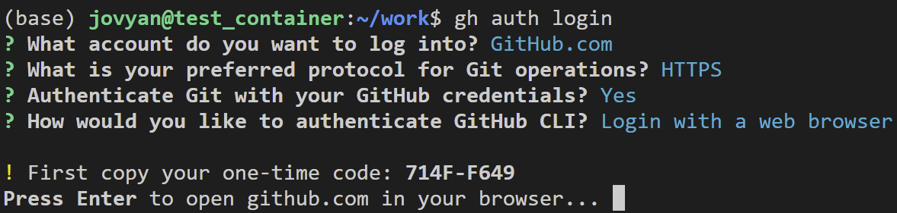
Once completed, you will now be able to manage GitHub repositories using HTTPS.
If you wish to create a repository on your GitHub account for your freshly minted project container use the following commands:
- Convert generated files to a repository:
cd /home/jovyan/work/ git init git add * git commit -m "first commit" git branch -M main
- Upload local repository to a new GitHub repository. Be sure to choose, "Push an existing local repository to GitHub":
cd /home/jovyan/my-awesome-project gh repo create
To get more familiar with how your container works consider the following sets of tutorials: